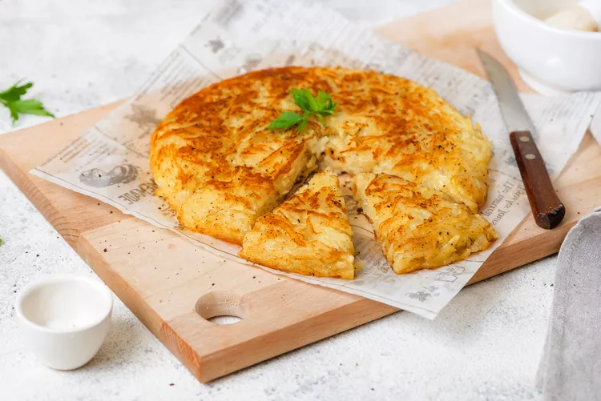

In Switzerland, fondue may sound cliche, yet it is ingrained in the culture. Fondue has long been a wintertime staple for Swiss mountain dwellers who wanted to use up their bread and cheese. It is now essential for every citizen and tourist to the nation from fall through spring. Dip artisanal bread into melting cheeses.

Rosti is a classic Swiss dish made with thinly shredded potatoes that are pan-fried till crisp and golden. Serve rosti with pickled pearl onions and acidic gherkins beside a fried egg, melting raclette cheese, and salty bacon for a delectably irresistible combination known as rosti Valaisanne.
